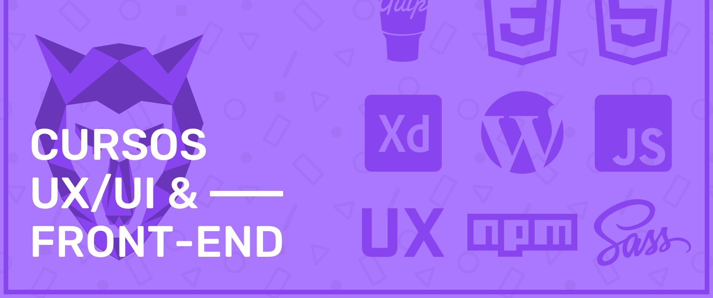

15 de Maio de 2023
Comecei na Origamid

Site Mobile com Design adaptável, HTML5 e CSS3, Integração com CMS, Webdesign, CSS Flexbox, UI Design Avançado, Web Design Completo, CSS Grid Layout, WordPress como CMS, Adobe XD, Automação Front End com NPM, JavaScript Completo, React, Vue.js, Bootstrap, WooCommerce e TypeScript.